Product Requirements Dossier · v5.13.0 · June 2026
Manage units. Empower real estate.
The definitive product document for Mimarek — a Saudi-first PropTech platform that runs the entire property lifecycle on one compliant system. Repo-grounded product truth, executive narrative, and build-ready requirements in a single source.
01 · Executive summary
A complete product, hardened and waiting on go-to-market.
Mimarek (v5.13.0) is feature-complete across the property lifecycle, security-hardened through a 19-finding audit sweep, and built Arabic-first for the Saudi regulatory environment. What it does not yet have is customers — it is pre-launch by choice, not by limitation.
What this means
The engineering risk of a compliant Saudi PropTech system is retired. What remains is commercial: deployment, pricing, positioning, and the regulated go-lives (production ZATCA, marketplace conveyance) that need external sign-off — not code.
How to read this
Every capability carries a status tag. Nothing is aspirational unless labelled. Figures inside screenshots are illustrative demo data, not business metrics — real traction and pricing are marked founder-input.
02 · الملخص التنفيذي
منتجٌ مكتمل وجاهزٌ للتشغيل، بانتظار التسويق والمبيعات.
معمارك منصةٌ سعوديةٌ متكاملة لإدارة دورة حياة العقار — من العميل المحتمل إلى الحجز والعقد والتحصيل والصيانة — مبنيةٌ أصلاً للسوق السعودي ولغته ولوائحه. المنتج اليوم مكتمل المزايا وجاهزٌ للتشغيل (الإصدار 5.13.0): تحصيلٌ ذكي للإيجارات، وإدارةٌ للمبيعات والعقود، وفوترةٌ إلكترونية متوافقة مع هيئة الزكاة والضريبة والدخل (المرحلة الثانية)، وسوقٌ عقاري بين المنشآت، ولوحاتٌ تنفيذية مخصّصة لكل دور.
البيانات الحسّاسة مشفّرة بمعيار AES-256-GCM، والوصول محكومٌ بفصلٍ صارم بين فريق المنصّة والعملاء عبر تسعة أدوار وصلاحياتٍ دقيقة، مع عزلٍ كامل لبيانات كل منشأة. النظام عربيٌّ أولاً بواجهةٍ كاملة من اليمين إلى اليسار. لم يُطلَق المنتج تجارياً بعد؛ تصف هذه الوثيقة الحالة الراهنة تمهيداً لبناء استراتيجية التسويق والمبيعات. الأرقام في اللقطات بياناتٌ توضيحية وليست مؤشرات أداء حقيقية.
03 · Brand & identity
The Mimarek identity — modern, modular, data-driven.
The visual system every Mimarek surface and document is built on: one logo system, a disciplined palette, and two typefaces. Consistency protects recognition — always apply the identity with clarity, balance, and discipline.
Logo system
Clear space = the height of the cyan square in the icon, on all sides. Minimum size: 120 px digital / 20 mm print for the full lockup, 32 px for the icon. Never stretch, recolor, rotate, add effects, or rearrange the locked elements; use the reverse lockup on dark backgrounds.
Color palette
Color roles & rules
Deep Navy carries primary typography, navigation, and structure. Teal and Bright Cyan drive action and highlight key information — use for buttons, links, icons, and data accents, with cyan used sparingly. Light tones support clarity and create breathing room. Do maintain strong contrast for readability and accessibility. Don't overuse bright accents or introduce colors outside the palette. The logo mark uses its own fixed tones (#031630 / #008d9a) and is never a UI color.
Typography
Satoshi — English & UI
Modern, geometric sans-serif with excellent clarity and neutrality. Used for all Latin text, numbers, and interface copy.
Tajawal — Arabic
Contemporary Arabic typeface with high readability and balanced forms. Used for all Arabic content, RTL-first.
Type hierarchy
Visual principles
Clean & modular
Remove noise; build from a simple geometric system. Thin dividers, rounded square modules, generous whitespace.
Data-driven & high-contrast
Visuals communicate insight and performance. Keep strong contrast; use cyan only for actions and accents.
Aspirational imagery
Modern architecture (bright, clean), insight-led dashboards, and clean structured UI cards.
04 · Positioning
One operating system for the property business — Saudi-native, not Saudi-translated.
Lead marketing with the differentiators; the baselines are table stakes.
Mimarek replaces spreadsheet-and-WhatsApp coordination of a developer's sales, leasing, finance, and maintenance teams with one tenant-isolated system where a customer entered once flows from lead → reservation → contract → rent installment → receipt without re-keying.
Baseline expectations table stakes
- Arabic-first & RTL — expected of any 2026 Saudi product.
- Responsive & secure access — desktop, tablet, mobile.
- Role-based dashboards — CFO and leasing agent see different things.
Differentiators where we win
- Compliance-native workflow fit — ZATCA, Absher fields, Ejar/REGA hooks built into the lifecycle.
- Enter a customer once, reuse everywhere — one record powers CRM, contracts, finance, maintenance.
- Cross-org B2B marketplace — trade units between organizations with deed-transfer settlement.
- Encrypted customer data by default — searchable blind indexes, audit trail, tenant isolation.
Deliberately out of scope. Pure property management — not an off-plan/project-launch platform, not a public consumer listings portal, not an accounting general ledger. It connects to those; it doesn't replace them.
05 · Market & why now
Regulation is forcing Saudi real estate onto compliant software — now.
External, defensible drivers. Market-size figures are left as founder/analyst input, not invented here.
ZATCA Phase-2
Mandatory e-invoicing (Fatoora) rolls across VAT-registered businesses in waves. Operators issuing rent and sale documents need a cleared, compliant path — Mimarek has the engine in-house.
Ejar & REGA
Rental contracts route through Ejar; brokerage and advertising fall under REGA licensing. Saudi PropTech must speak these systems to be credible.
Vision 2030 & PDPL
Sector digitization plus the PDPL / NDMO data-governance regime reward systems that encrypt, audit, and localize customer data by design.
The timing argument
Compliance deadlines convert "nice-to-have software" into "required infrastructure." A product already compliant when the operator must act has a buying-window advantage over generic CRMs and foreign property tools that are not Saudi-native.
06 · Personas
Who buys, and who sits in each seat.
Two universes that never share surfaces or data: the platform team that operates Mimarek, and the customer organizations that run their property business inside it.
Platform tier — Mimarek staff
Platform Admin
Operates the product: tenants, plans, billing, coupons, ZATCA platform onboarding, marketplace moderation, data-retention policy.
Platform Support
Cross-tenant support: tickets, account help, ZATCA clearance ops. Broad permissions for support tooling, blocked from tenant business data by the audience guard.
Tenant tier — the customer organization's seats
Org Owner / Admin
The buyer's decision-maker. Full control: team, settings, every module, ZATCA config.
Property / Sales Manager
The "units admin" + sales-management seat: properties, deals, contracts, leases, reports, marketplace publish & convert.
Sales Agent
Pipeline execution: leads, customers, deals, contracts, payment recording. No exports, no PII reveal.
Leasing Officer
Rentals: leases, reservations, renewals, customer records with PII access.
Finance / Accounting
Money seat: payments, billing view, reports, ZATCA tax config.
Maintenance Technician
Field seat: assigned work orders and preventive tasks only — no financial or customer data.
Basic User · buyer / tenant
The end-user persona: dashboard, notifications, help.
Seller ↔ Buyer org
In the marketplace, organizations act as seller (publish) and buyer (inquire → convert → conveyance), with a platform moderator between them.
07 · Roles & permissions
The access model is a sales asset — not fine print.
Simplified from ~60 permissions in lib/permissions.ts. PII read is gated separately from record read.
| Capability | Admin | Manager | Agent | Leasing | Finance | Tech | User |
|---|---|---|---|---|---|---|---|
| Dashboard | ● | ● | ● | ● | ● | ● | ● |
| CRM & customers | ● | ● | ● | ● | ◐ | – | – |
| Properties / units | ● | ● | ◐ | ◐ | – | ◐ | – |
| Reservations & deals | ● | ● | ● | ● | – | – | – |
| Contracts | ● | ● | ● | ● | ◐ | – | – |
| Leases | ● | ● | ◐ | ● | ◐ | – | – |
| Payments | ● | ● | ● | ◐ | ● | – | – |
| Maintenance | ● | ● | ◐ | – | – | ● | – |
| Reports & export | ● | ● | – | ◐ | ● | – | – |
| Billing (subscription) | ● | ◐ | – | – | ◐ | – | – |
| Team & org settings | ● | ◐ | – | – | – | – | – |
| ZATCA tax config | ● | – | – | – | ● | – | – |
| Marketplace (publish/trade) | ● | ● | ◐ | ◐ | – | – | – |
| Audit log | ● | – | – | – | – | – | – |
↔ Scroll the table horizontally
● full · ◐ read/partial · – none. Platform roles (SYSTEM_ADMIN, SYSTEM_SUPPORT) get broad permissions for support tooling but are blocked from all tenant business data by a Layer-3 audience check — permission alone never grants tenant access.
08 · Route, permission & audience matrix
Every surface has a guard.
Derived from lib/route-guards.ts — the single source for route → permission + audience. Tenant and platform surfaces never overlap.
| Route | Audience | Gate |
|---|---|---|
/dashboard | Tenant | dashboard:read |
/dashboard/crm | Tenant | crm:read (PII: customers:read_pii) |
/dashboard/units | Tenant | properties:read |
/dashboard/reservations | Tenant | deals:read |
/dashboard/contracts | Tenant | contracts:read |
/dashboard/payments · /invoices | Tenant | payments:read · finance:read |
/dashboard/maintenance | Tenant | maintenance:read |
/dashboard/marketplace | Tenant | marketplace:read / publish |
/dashboard/finance · /reports | Tenant | finance:read · reports:read |
/dashboard/billing · /settings | Tenant | billing:read · organization/team |
/dashboard/admin/** | Platform | isSystemRole + per-area (billing:admin, zatca:admin, marketplace:moderate) |
↔ Scroll the table horizontally
09 · Product tour
One customer record flows from lead to receipt — screen by screen.
Each step is a working surface today; captions state the business outcome. All figures are illustrative demo data.
1 · Role dashboard
See the business in ten seconds.
A North-Star metric plus reservations, signed contracts, overdue payments, portfolio size, and open maintenance — with a date range and pending-actions queue. Each role lands on the dashboard built for its job.
/dashboard
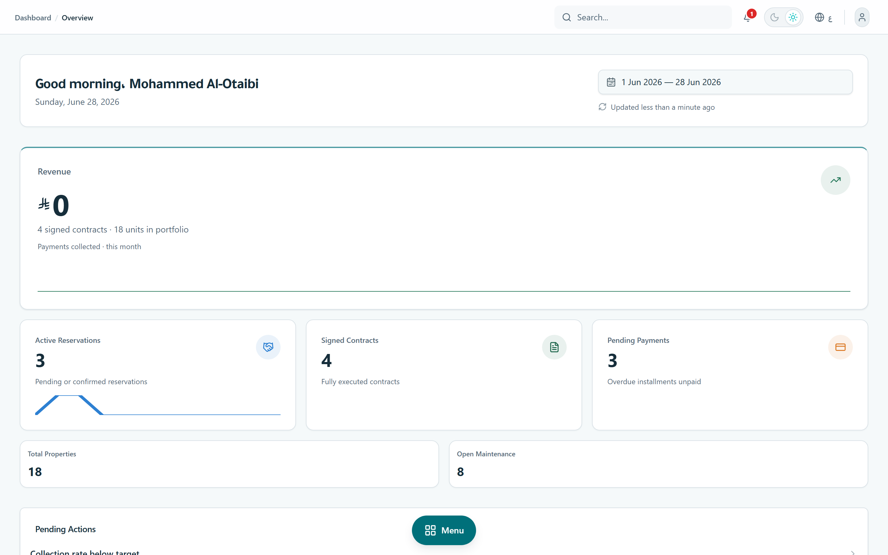
2 · CRM pipeline
Move a lead to a signed deal without losing it.
A Kanban pipeline with per-customer activity timeline, agent assignment, and a deliberate "Show PII" gate — sensitive identity stays masked until a permitted user reveals it.
/dashboard/crm · customers:read_pii
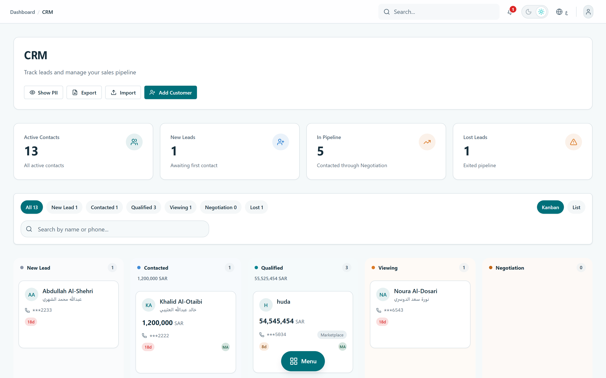
3 · Reservations
Hold a unit, then convert it — one record, no re-entry.
Time-boxed reservations with deposit tracking and extension approvals that convert straight into a contract, against live unit inventory.
/dashboard/reservations
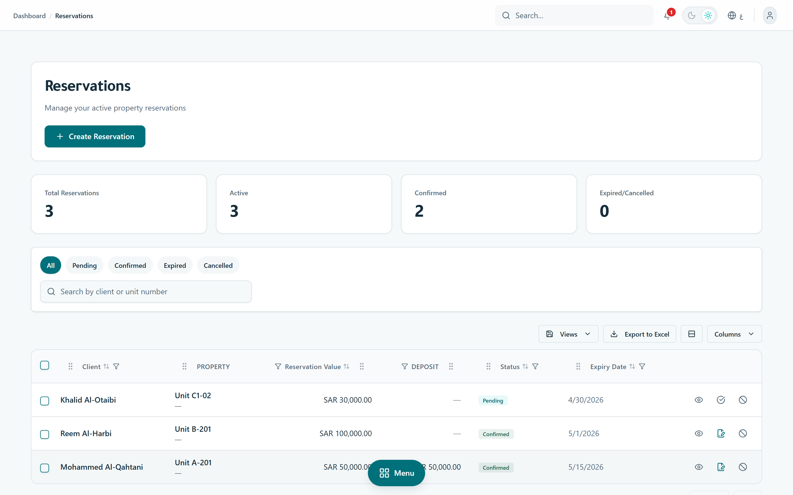
4 · Payments & collections
Know exactly what's collected, overdue, and due next.
Rent and sale installments in one ledger with record-payment, bulk mark-paid, and an append-only reversal trail; overdue flagging runs on a schedule.
/dashboard/payments
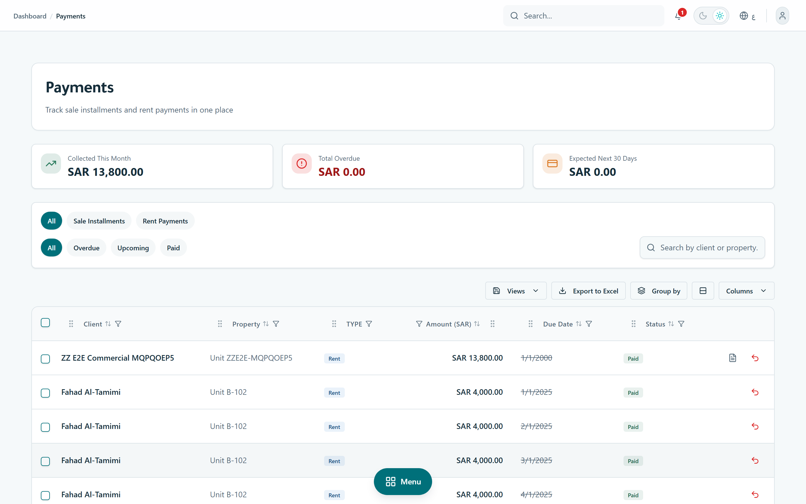
5 · Invoices & ZATCA
Issue a tax document the authority will clear.
SaaS invoices and tenant-issued ZATCA documents with sequenced numbering, 15% VAT, QR, signed XML, and clearance status. The crypto engine is in-house (@repo/zatca).
/dashboard/invoices
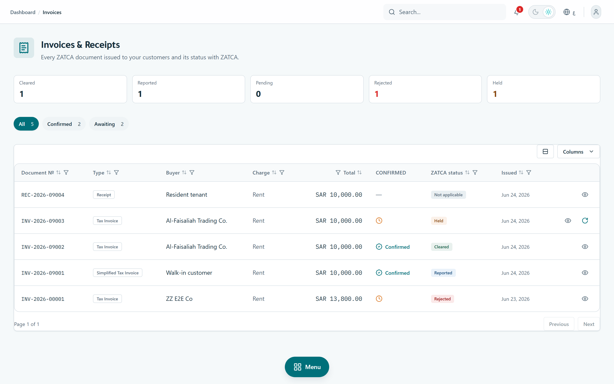
6 · Maintenance (CMMS)
Catch SLA breaches before the tenant escalates.
Work orders by category and priority with assignment and cost tracking, plus preventive-maintenance plans that auto-generate recurring work orders.
/dashboard/maintenance
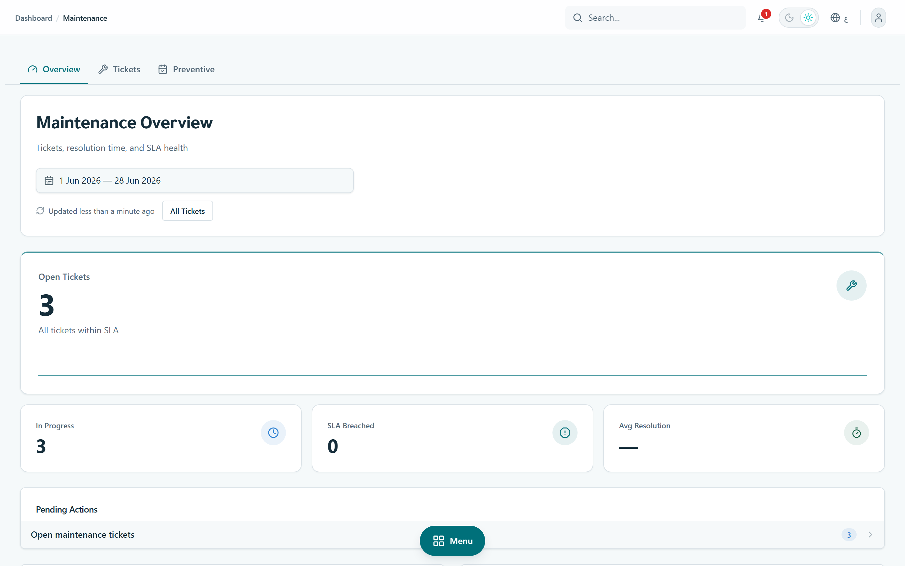
7 · Finance dashboard
Control receivables risk by aging bucket.
Collection rate, total AR, overdue, and AR-aging, with on-demand revenue / occupancy / collection reports exportable to PDF and Excel.
/dashboard/finance
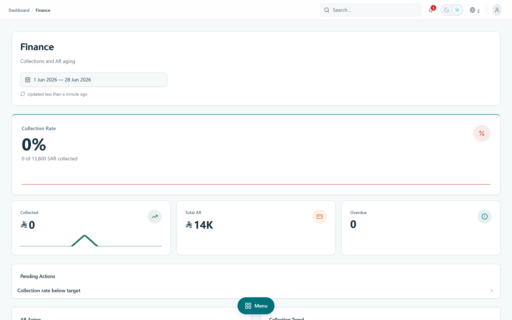
8 · Platform administration
Run the SaaS business itself.
A separate platform-staff console: ARR / MRR, ARR waterfall, AR aging, ZATCA clearance rate, trial-to-paid, plan/coupon management, marketplace moderation, and PDPL data-retention.
/dashboard/admin · SYSTEM_ADMIN
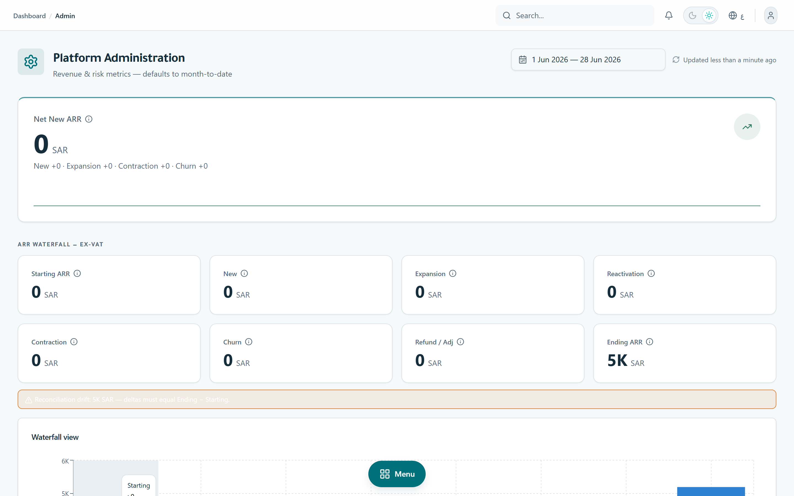
10 · Workflow PRDs
Build-ready requirements, by workflow.
Each requirement is testable and carries a priority (Must/Should) and status. These are the execution-level specs squads build against.
A · Lead → Contract
Turns an inquiry into a reserved unit and a signed sale or lease contract — the commercial heart of the product, connecting CRM, inventory, reservations, and contracts.
| ID | Requirement | Pri | Status |
|---|---|---|---|
| LTC-01 | Create a customer with required identity/contact fields through the canonical encrypted path. | Must | Shipped |
| LTC-02 | Import customers via validate → commit steps; invalid rows fail with visible errors. | Should | Shipped |
| LTC-03 | View customers in Kanban and list with stage filters; PII masked unless permitted + explicitly revealed. | Must | Shipped |
| LTC-04 | Create/confirm/cancel reservations only for eligible customer/unit combinations, with optimistic UI. | Must | Shipped |
| LTC-05 | Create sale and lease contracts from customer/unit context; drafts editable, signing irreversible with confirmation. | Must | Shipped |
| LTC-06 | Signed contract state is visible to payments, invoices, reports, and dashboards. | Must | Shipped |
| LTC-07 | Automatic Ejar registration on lease signing. | Should | Planned |
Acceptance: a lead moves CRM → reservation → signed contract through visible UI; invalid transitions fail safely; PII stays masked unless authorized; no step depends on a hidden URL.
B · Rent → Invoice (finance & ZATCA)
| ID | Requirement | Pri | Status |
|---|---|---|---|
| RTI-01 | Generate rent installment schedules from active leases (monthly/quarterly/etc.). | Must | Shipped |
| RTI-02 | Record full/partial payments, bulk mark-paid, and ledger-style reversals (never destructive delete). | Must | Shipped |
| RTI-03 | Flag overdue installments on a schedule; surface collected / overdue / due-next. | Must | Shipped |
| RTI-04 | Generate or link ZATCA tax invoices/receipts by charge classification + buyer data; hold when buyer data missing. | Must | Shipped |
| RTI-05 | Tenant ZATCA config (EGS, tax mapping) under settings; active config locked, reset via support flow. | Must | Shipped |
| RTI-06 | Production ZATCA clearance against live Fatoora (production CSID + advisor sign-off + deployed scheduler). | Must | Gated |
| RTI-07 | Strict PDF/A-3b legal-copy conformance certification. | Should | Planned |
Acceptance: a recorded payment produces the correct collected/overdue state and the right ZATCA document or hold; sandbox issuance clears; tax classification remains advisor-reviewed.
C · Maintenance operations
| ID | Requirement | Pri | Status |
|---|---|---|---|
| MNT-01 | Create tickets with category, priority, assignment, scheduling, and cost (estimated vs actual). | Must | Shipped |
| MNT-02 | Track status lifecycle (open → assigned → in-progress → resolved → closed) with SLA-breach visibility. | Must | Shipped |
| MNT-03 | Preventive-maintenance plans auto-generate recurring work orders by frequency. | Should | Shipped |
| MNT-04 | Technician seat sees only assigned work — no financial or customer data. | Must | Shipped |
| MNT-05 | Vendor dispatch + parts inventory. | Should | Planned |
D · B2B marketplace & conveyance
| ID | Requirement | Pri | Status |
|---|---|---|---|
| MKT-01 | Verified organizations publish units; listings pass a compliance/moderation gate before going live. | Must | Shipped |
| MKT-02 | Buyer orgs browse/filter, inquire, and convert an inquiry into a reservation + preliminary contract/deal. | Must | Shipped |
| MKT-03 | Deed proof stores sensitive data encrypted; file upload via authorized, signed-URL access only. | Must | Shipped |
| MKT-04 | REGA/FAL authorization + platform verification represented in workflow (manual verification). | Must | Shipped |
| MKT-05 | Atomic cross-org unit transfer behind settlement + legal gates, with kill switch. | Must | Gated |
| MKT-06 | Unrestricted production launch (platform FAL/license, legal + PDPL sign-off, operating policy). | Must | External |
E · Platform admin, security & billing
| ID | Requirement | Pri | Status |
|---|---|---|---|
| PSB-01 | Platform console: ARR/MRR, ARR waterfall, AR aging, ZATCA clearance rate, trial-to-paid (system-only). | Must | Shipped |
| PSB-02 | Subscription lifecycle (trial → active → past-due → paused → canceled) with automated trial expiry + dunning. | Must | Shipped |
| PSB-03 | Plans, entitlements, coupons, and tokenized payment methods, all org-scoped. | Must | Shipped |
| PSB-04 | PII encryption + blind-index, token revocation, sign-out-all-devices, append-only audit log. | Must | Shipped |
| PSB-05 | Data-retention sweeps (PDPL), support tickets, and permission requests. | Must | Shipped |
11 · Saudi compliance posture
Compliance built into the data model, not promised on a slide.
| System | What's in the product | Status |
|---|---|---|
| ZATCA (Phase-2) | In-house engine: UBL, signing, hash chaining, QR; SaaS + tenant issuance; clearance/report cycle | Shipped prod gated |
| Absher (identity/KYC) | Customer model: nationalId, personType, gender, DOB — encrypted at rest | Shipped (schema) |
| MOC (commercial registry) | Organization model: CR, entityType, legalForm, registration status | Shipped (schema) |
| REGA | Listing compliance gate + per-org FAL/REGA authorization before conveyance | Shipped conveyance gated |
| Ejar | Lease carries an Ejar contract id; auto-registration not yet wired | Planned |
| NDMO / SDAIA & PDPL | Configurable retention sweeps, append-only audit log, IP-minimized consent log | Shipped |
Honest read on ZATCA & conveyance
The ZATCA engine is code-complete and defaults to SANDBOX; production is one explicit switch but blocks on external prerequisites — production CSID, tax-advisor sign-off, and a deployed scheduler. Marketplace deed conveyance is fully built but ships behind an off-by-default flag pending REGA/legal authorization. These are governance gates, not missing features.
12 · Security & data protection
Encrypted, isolated, audited — the trust layer for an enterprise sale.
Encryption & search
Customer PII (phone, email, national ID, DOB, address, document info) is encrypted with AES-256-GCM at rest. HMAC blind-index hashes allow exact search without decrypting.
Tenant isolation
Every record is scoped by organizationId; Postgres RLS is enabled on all 60 tables to slam the anon/PostgREST door. One tenant cannot read another's data.
Auditability (PDPL)
An append-only audit log records create/update/delete/PII-read/export with before/after snapshots and IP — retained on a configurable schedule.
Session & access
JWT with instant revocation (token-version bump = sign-out-everywhere), a 3-layer audience guard separating platform staff from tenant data, PII-read gated separately.
Audited, not assumed
June 2026 (v5.6.1 → v5.13.0) closed 19 security findings across mass-assignment, authorization, supply-chain CVEs, document access, PII encryption, and token hashing — each shipped with regression tests.
13 · Monetization & packaging
The billing machine is built — the price tags are a business decision.
Everything needed to charge is shipped. Prices are DB-configurable and left as founder input, not invented.
Plans & tiers
Three seeded tiers (Starter / Professional / Enterprise) with monthly + annual cycles, free trials, and per-plan entitlements (flags + limits).
Subscription lifecycle
Trialing → active → past-due → paused → canceled, with automated trial expiry, dunning, plan changes, and price-lock at renewal.
Revenue instrumentation
MRR per subscription with monthly snapshots and an ARR waterfall splitting new / expansion / contraction / churn.
Invoicing
SaaS invoices with sequential numbering, 15% VAT, credit notes, and ZATCA fields.
Coupons
Percentage or fixed-amount codes with redemption limits, validity windows, and plan/cycle scoping.
Payment methods
Tokenized cards per org (mada / Visa / Mastercard / Apple Pay) across multiple Saudi gateways.
Pricing — founder input required placeholder
Tiers exist; SAR price points, included limits, and trial length are a go-to-market decision to set with the founder — not a code change.
14 · Maturity
A product that spent its last cycle hardening, not patching.
| Version | Theme | Highlight |
|---|---|---|
| v5.13.0 | Optimistic rendering | Instant mark-paid + reservation-status feedback |
| v5.12.0 | Crypto refactor + deed upload | Shared encryption package; server-authoritative deed upload (SEC-016) |
| v5.11.0 | PII encryption + cleanup | DOB / address / document info encrypted; invitation tokens hashed |
| v5.7–5.10 | Hardening waves A–C | Mass-assignment closed; JWT revocation; CVE patch; signed-URL document access; abuse tests |
| v5.1–5.6 | ZATCA Phase-2 + a11y | In-house e-invoicing R1→R5; WCAG label sweep + enforcing lint rule |
| v5.0.0 | Mimarek rebrand | Brand, palette, typography (teal/navy · Tajawal/Satoshi) |
Quality gates
Vitest unit + Playwright E2E with CI coverage gates, lint/type/format, and a production-audit gate blocking new critical CVEs.
Stack
Next.js 16, React 19, Tailwind v4, Prisma + Supabase PostgreSQL, NextAuth v5.
Architecture
Turborepo monorepo with shared @repo/db · ui · crypto · zatca; server-actions data layer; multi-tenant by design.
15 · Roadmap & scorecard
What's next is mostly switches and go-lives, not green-field build.
Now
Deploy a hosted environment; flip ZATCA to production once CSID + advisor sign-off + scheduler are in place.
Next
Activate marketplace conveyance after REGA/legal authorization; refresh the public landing page on verified proof.
Later
Ejar registration on lease signing; vendor dispatch + parts inventory; metered entitlements; PDF/A-3b certification.
Exploring
Rebuilt document/attachment product (after the v5.11 vault removal); deeper analytics.
Scorecard — metric definitions (no invented numbers)
| Metric | Definition | Baseline |
|---|---|---|
| Activation | Orgs completing onboarding + first unit/customer/contract | founder input |
| Collection rate | Collected ÷ billed in period | founder input |
| Lead → sign duration | Customer creation → signed contract | founder input |
| ZATCA clearance rate | Cleared ÷ submitted documents | founder input |
| Trial → paid | Trials converting to active subscriptions | founder input |
| Net new ARR | New + expansion − contraction − churn | founder input |
16 · Open questions — needs ownership
Decisions that gate go-to-market.
| Topic | Decision required | Owner |
|---|---|---|
| ICP priority | Developer, property manager, brokerage, family office, or platform operator first | Founder |
| Packaging | Which modules belong in Starter / Professional / Enterprise + add-ons | Founder / Product |
| Pricing | SAR pricing, annual discount, marketplace fee, ZATCA add-on policy | Founder |
| Compliance posture | Risk tolerance + sign-off owner for ZATCA, REGA/FAL, PDPL, Ejar | Founder / Legal |
| Marketplace launch | Conveyance: internal pilot, limited beta, or production | Founder / Legal |
| Deployment | Hosting, production DB region, scheduler, observability | Eng |
| Customer references | Approved logos, quotes, portfolio sizes for collateral | Founder |
17 · Definition of done
The bar any PRD-derived work must clear before it ships.
Product & UX
- Every capability reachable through a visible UI path (no hidden URLs).
- Works in Arabic (RTL) and English (LTR), light and dark.
- Empty / loading / error states handled; friendly, bilingual error copy.
Engineering & security
- Org-scoping + route/action permission on every surface.
- PII through the canonical encrypted path; audit events on sensitive actions.
- Build/lint/type green; unit + E2E coverage; production-audit gate clean.
18 · Appendix
Evidence discipline & proof index.
Capabilities were verified against source. Demo figures are illustrative; traction and pricing are explicit placeholders. No metric here is invented.
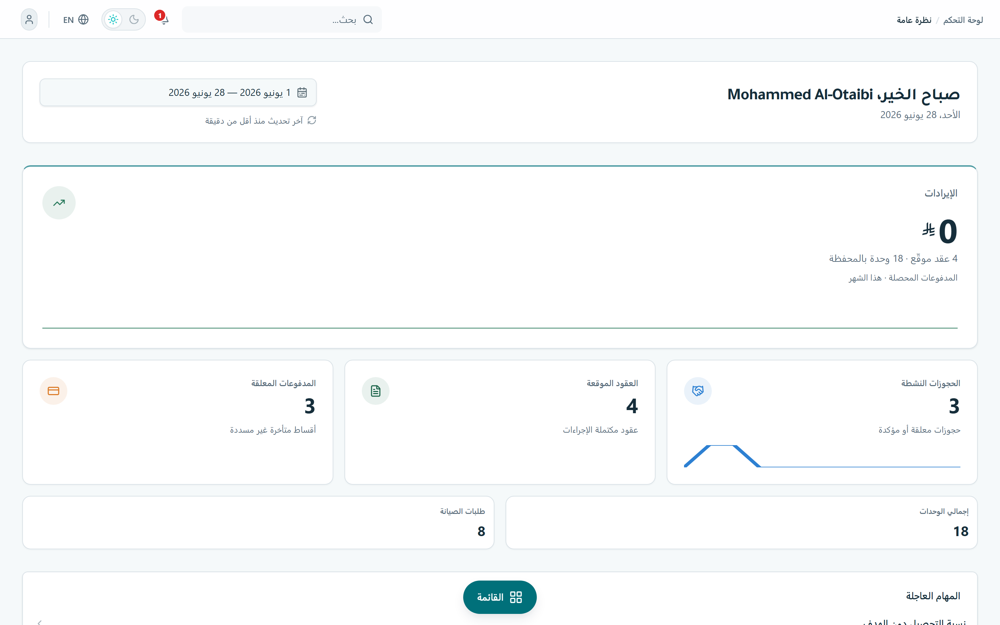
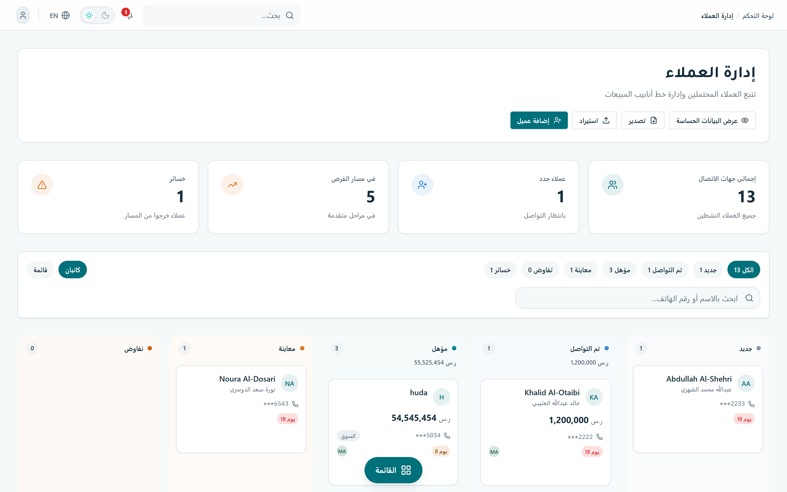
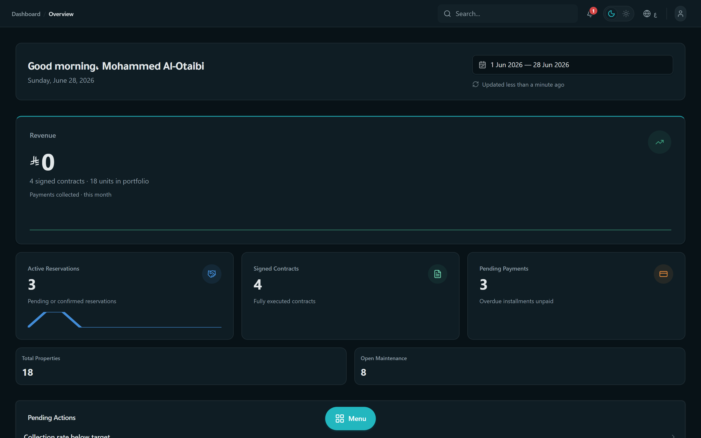
Source proof index
| Claim | Verified in |
|---|---|
| 9 roles · ~60 permissions · platform/tenant split | apps/web/lib/permissions.ts |
| Route → permission + audience | apps/web/lib/route-guards.ts |
| AES-256-GCM PII encryption + blind index | packages/crypto/src/encryption.ts |
| RLS on all 60 tables | packages/db/sql/2026-06-enable-rls.sql |
| ZATCA engine + sandbox default | packages/zatca/ · lib/zatca-env.ts |
| Data model & multi-tenancy | packages/db/prisma/schema.prisma |
| Brand spec (palette, type, logo) | NewIdentity/Mimarek visual identity guidelines.pdf |